China-based fastener sourcing partner
China Fastener & Hardware Sourcing Partner
China Hardware Sourcing is a China-based fastener sourcing partner helping overseas importers, distributors and industrial buyers source bolts, nuts, washers, screws, anchors and other industrial fasteners through manual RFQ review.
We support product category review, specification clarification, and RFQ communication for standard and custom fastener requirements.
Based in Yongnian County, Hebei Province, one of China's key fastener industrial bases, we work directly with local manufacturing networks for fastener sourcing.
Send your RFQ to: xyan060816@gmail.com
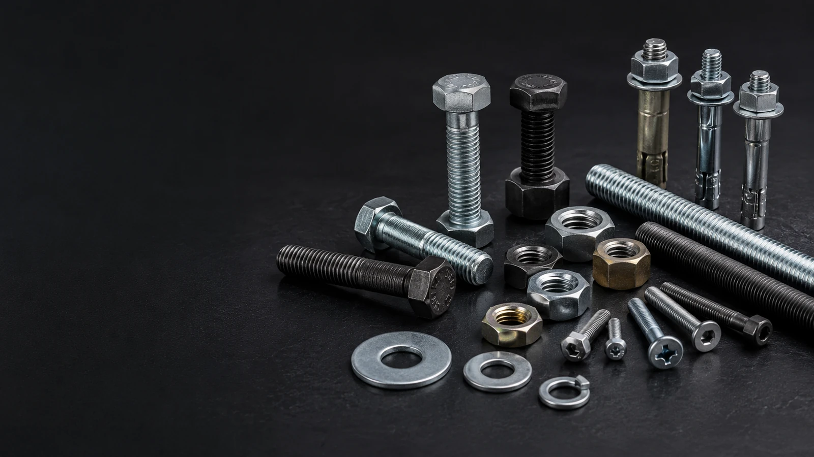
Representative product images are for category reference only. Final specifications are confirmed based on buyer drawings, standards, samples, or purchase lists.
Buyer RFQ Preparation Snapshot
This page helps overseas buyers understand how to prepare fastener sourcing inquiries from China before manual RFQ review.
Main Fastener Categories
Explore core fastener categories commonly requested by importers, distributors, contractors, and industrial buyers.
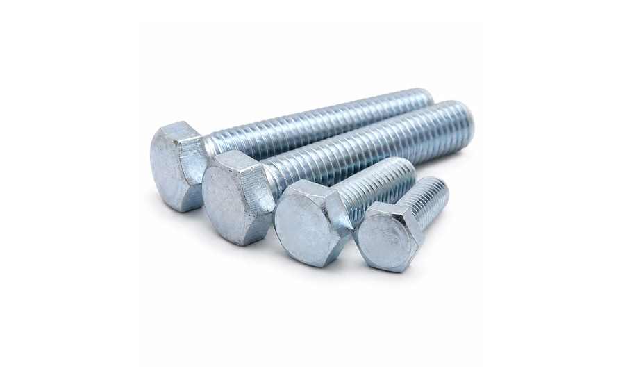
Bolts
For structural connections, machinery assembly, equipment installation, and general industrial fastening applications.
View Category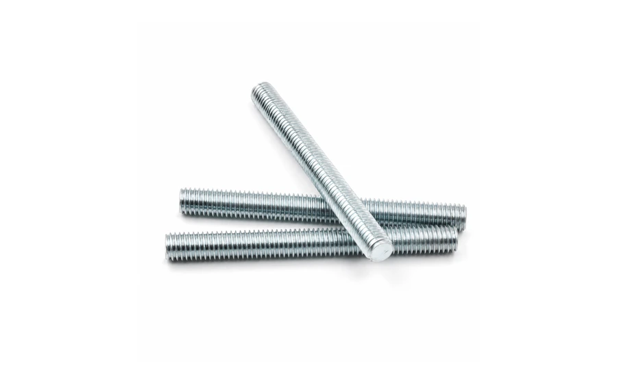
Studs & Threaded Rods
Used for flanges, pipe systems, construction connections, machinery assembly, and custom fastening requirements.
View Category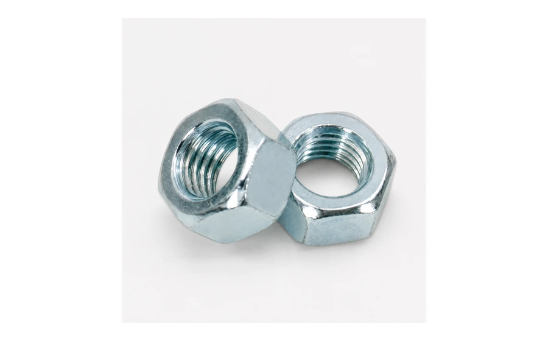
Nuts
Used with bolts, screws, and threaded rods across a wide range of mechanical and structural applications.
View Category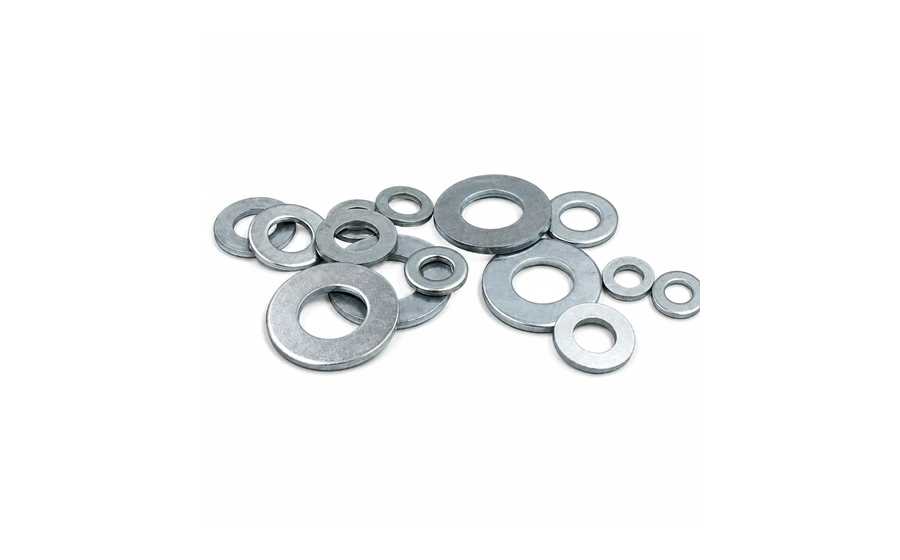
Washers
Designed to distribute load, protect surfaces, and improve fastening stability in assembled connections.
View Category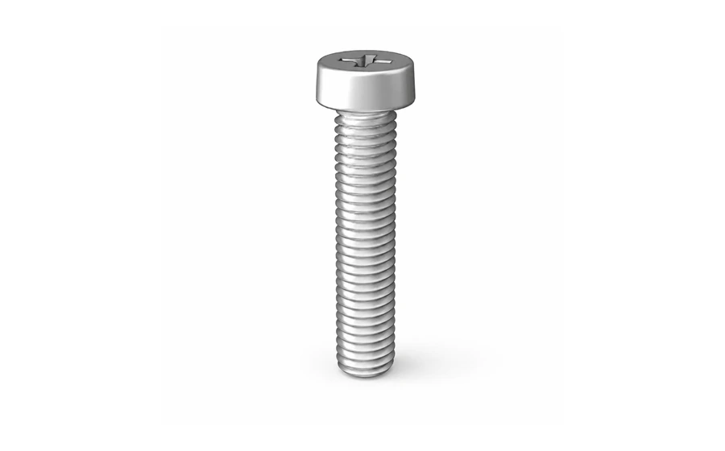
Screws
Suitable for machinery, sheet metal, wood, construction, and industrial assembly applications.
View Category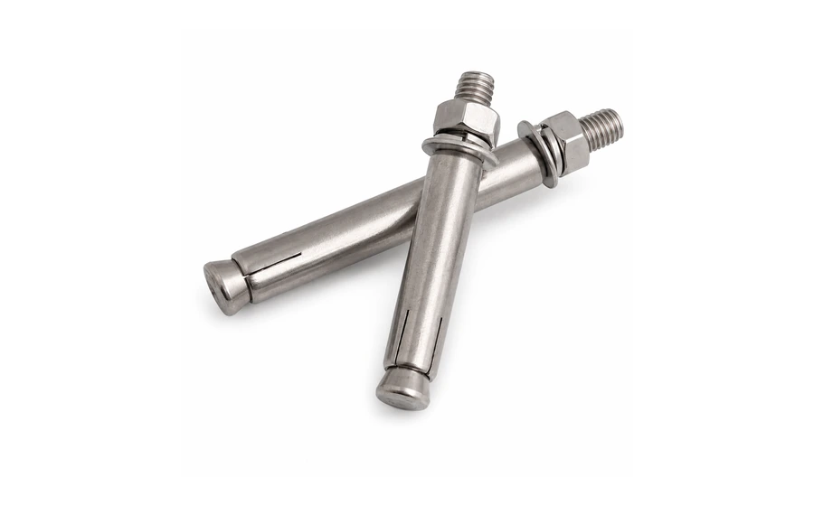
Anchors
Used for concrete, masonry, structural installation, and construction-related fastening requirements.
View CategoryFastener Product Preview
Representative product images for category review and sourcing communication.
Featured Fastener Types
Representative product types for RFQ review and sourcing communication. Availability and specifications depend on buyer requirements.
Hex Bolts
General-purpose bolts with a six-sided head, commonly used in machinery, construction, and industrial assembly.
Explore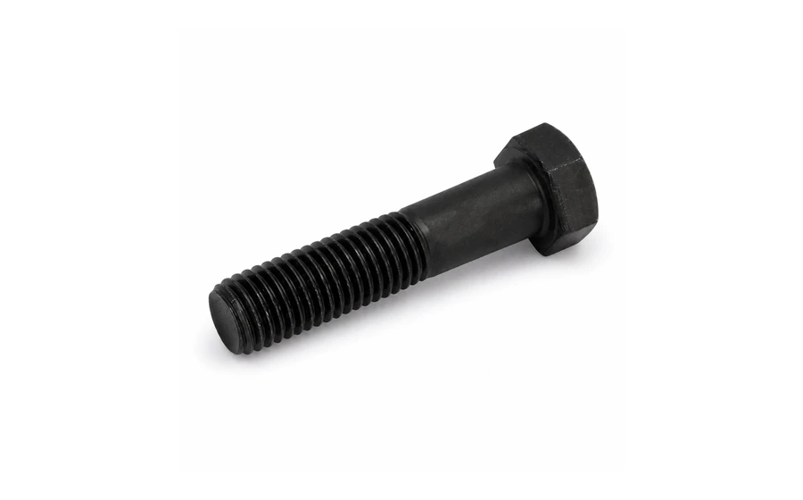
Heavy Hex Bolts
Often requested for heavier-duty structural and industrial fastening applications.
Explore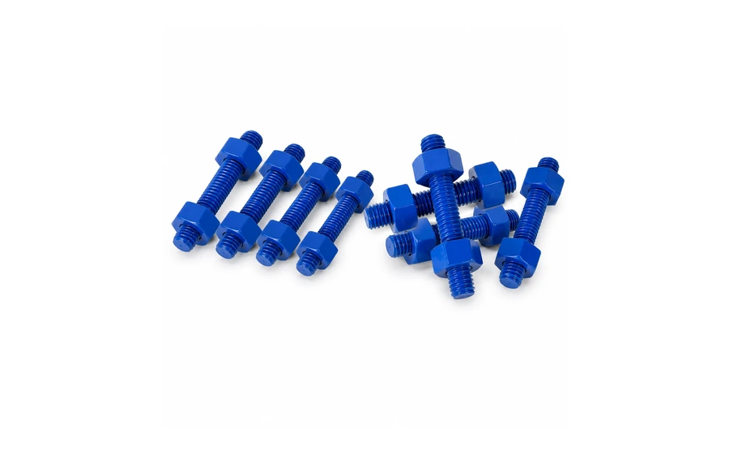
Double-End Studs
Commonly used in flanges, pipe systems, machinery, and equipment connections.
ExploreThreaded Rods
Fully threaded rods for construction, support, hanging, and general fastening applications.
ExploreHex Nuts
Standard nut type used with bolts, studs, and threaded rods in many fastening systems.
Explore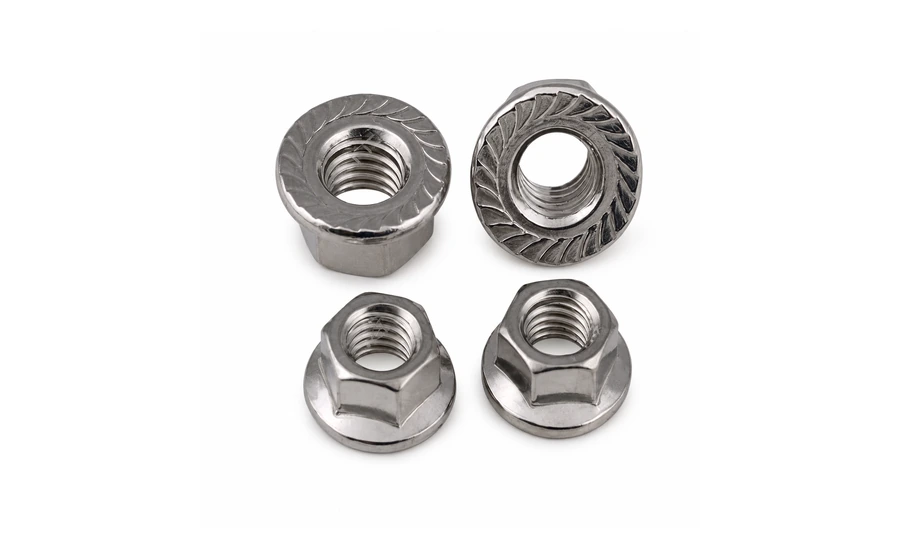
Lock Nuts
Designed to help resist loosening in selected vibration or movement-related applications.
ExploreFlat Washers
Used to distribute load and protect surfaces under bolts, screws, and nuts.
Explore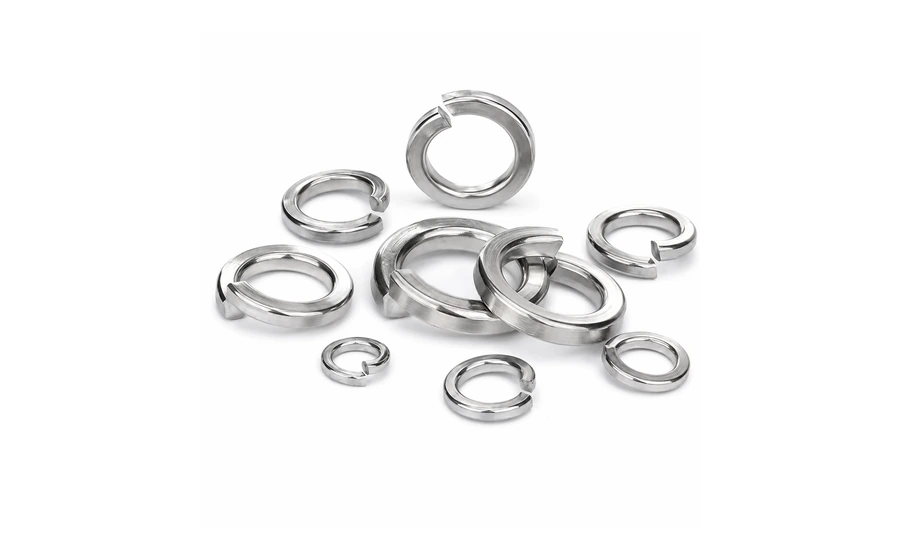
Spring Washers
Used in selected assemblies where additional locking force or vibration resistance may be required.
ExploreMachine Screws
Commonly used for metal parts, machinery, equipment, and precision assembly.
Explore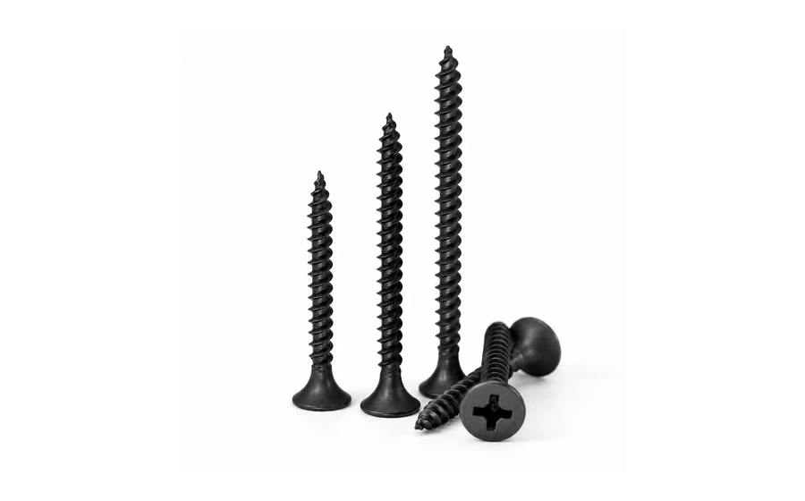
Self-Tapping Screws
Used for fastening into sheet metal, plastics, and other materials depending on application needs.
ExploreWedge Anchors
Commonly used for concrete fastening and construction installation applications.
Explore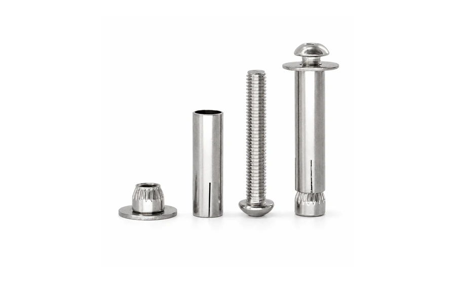
Sleeve Anchors
Used for masonry, concrete, and general installation requirements.
ExploreWhy Work With Us
As a China-based fastener sourcing partner, we support overseas importers, distributors and industrial buyers through manual RFQ review, product category matching, specification clarification, and sourcing communication for bolts, nuts, washers, screws, anchors and related industrial fasteners.
Product Category Coverage
Bolts, studs, threaded rods, nuts, washers, screws, anchors, and related hardware categories can be reviewed based on buyer needs.
RFQ Review Support
We help review product lists, drawings, photos, and basic specifications before inquiry follow-up.
Mixed-SKU Inquiry Handling
Suitable for buyers who need multiple fastener types in one purchasing list or sourcing request.
Material & Finish Discussion
Common material and surface finish requirements can be discussed based on product type and application.
Standard-Based Communication
Buyer-specified standards, drawings, samples, or purchase lists can be used for clearer sourcing communication.
Manual Inquiry Process
We do not display public cost details or automated transaction flow. Each inquiry is reviewed manually before follow-up.
How the RFQ Process Works
A compact manual process helps clarify product requirements before supplier communication.
Send Your RFQ or Product List
Share product names, photos, drawings, standards, quantities, or your current purchasing list.
Review Categories and Key Details
We review the product categories and identify the key information needed for sourcing communication.
Clarify Specifications
Material, finish, size, standard, packaging, and application details can be clarified before inquiry follow-up.
Proceed with Manual Follow-Up
After review, communication continues manually. Public quotation amounts and automated transaction flow are not used on this website.
Materials & Surface Finishes
Representative material and finish directions commonly discussed in fastener sourcing projects.
Zinc-Plated
A common metallic finish direction for many general-purpose fastener applications.
Black Finish
A darker surface option used for selected industrial, mechanical, or appearance-related requirements.
Stainless Steel
Often requested for corrosion resistance, clean appearance, and selected outdoor or industrial applications.
Brass / Yellow Tone
Used for selected applications requiring material distinction, color difference, or specific buyer requirements.
Material and finish availability should be confirmed based on product type, standard, quantity, and application requirements.
Buyer Resources
Practical sourcing guides and common questions for fastener buyers preparing RFQs from China.
Sourcing Guides
Mixed 20ft Container Fastener Order GuidePlan mixed fastener shipments by payload, CBM, carton data, and loading constraints.
Chinese Fastener Supplier Evaluation ChecklistReview supplier documents, audit points, traceability, and export evidence.
Fastener RFQ and QC Documents GuidePrepare specifications, QC documents, thread checks, coating reports, and packing data.
Surface Treatment Comparison for FastenersCompare zinc plating, HDG, zinc flake coating, and stainless steel conservatively.
DIN / ISO Fastener Standards ComparisonCheck DIN 933, ISO 4017, DIN 931, and ISO 4014 before substitution.
MOQ, Trial Order and Mixed Size Buying GuideUnderstand MOQ variables, samples, trial orders, and pilot shipments.
View All Sourcing Guides
Common FAQ
What information should I send for a fastener RFQ?
Send product type, size, material, finish, standard, quantity, packaging needs, and drawings or photos if available.
Can you support mixed fastener inquiries?
Yes. Mixed lists can be reviewed by category, specification, finish, and sourcing priority.
Why are prices not displayed publicly?
Requirements vary by specification, material, finish, quantity, packaging, and verification needs.
Are the product images final specifications?
No. Images are representative only. Final details should be confirmed from buyer documents.
What QC documents can be discussed before shipment?
Inspection reports, material certificates, coating reports, packing lists, and buyer-specified checks can be discussed.
Can buyers start with samples or a trial order before a full container?
Yes. Samples or trial orders can help verify communication, specifications, packing, and document expectations before larger mixed-container planning.
Send Your Fastener RFQ
Share your fastener list, drawings, photos, samples, or current purchasing items for manual review.
We review product categories, key specifications, material and finish requirements, and sourcing communication details before follow-up.
Send your product list, drawings, photos, or current purchasing items to: xyan060816@gmail.com
For manual RFQ review, please include product type, size, material, finish, standard, quantity, packaging requirements, and drawings if available.